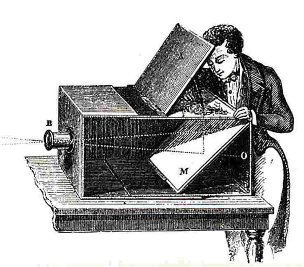
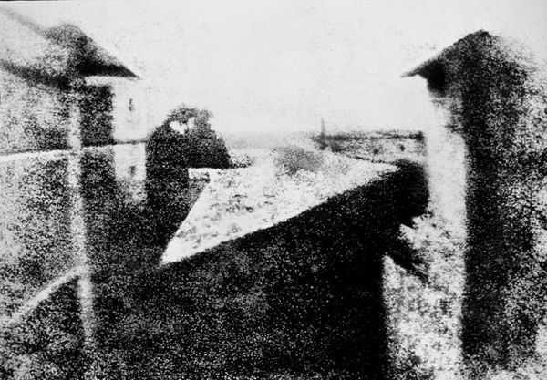
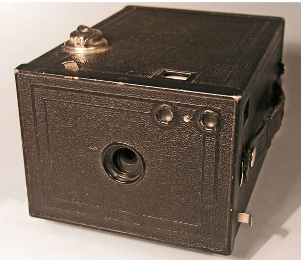

|
|
|
|---|---|
История фотографии: Начало |
|
|
Фотография. Искусство, появившееся в 1830-е и приобретшее широкую известность десятилетием позже. Сегодня это хобби одно из самых быстрорастущих, а индустрия производства фототоваров имеет многомиллиардный оборот. Вместе с тем, не каждому известно значение таких слов как «камера-обскура» или даже «выдержка», не многие слышали о таких именах, как Анри Картье-Брессон или даже Энни Лейбовиц. Сегодня мы заглянем в прошлое и рассмотрим, как эта удивительная техника создавалась и развивалась, потому что не познав славного прошлого – не построить великого будущего. |
Камера-обскура Еще до изобретения фотографии, люди были знакомы с принципами, на которых она в итоге была основана. Они могли создавать изображения на стене или листе бумаги, однако фотопечать в то время была невозможна, поскольку сохранение светового изображения оказалось более сложной задачей, чем его проецирование. Инструмент, использовавшийся для работы с изображениями назывался камера-обскура (что в переводе с латыни означает «темная комната») и он существовал за несколько столетий до появления фотографии.Считается, что камера-обскура была изобретена примерно в XIII-XIV столетиях, однако в летописи арабского ученого Хасана ибн Хасана, X в., описаны принципы работы камеры-обскуры, на которых в итоге была основана аналоговая фотография. Камера-обскура в сущности представляет собой тёмную закрытую коробку с отверстием в одной из стенок. Отверстие должно быть достаточно малым относительно размера коробки чтобы камера-обскура правильно работала. Принцип её работы основан на законах оптики: свет, проходящий через крошечное отверстие, трансформируется и создает изображение на встречаемой поверхности, которой является стенка ящика. Изображение было зеркальным и перевернутым, однако современная аналоговая камера работает примерно таким же образом, отличаясь только наличием зеркала и пленки для сохранения созданного светом изображения. |
| Первую цветную фотографию, изображение клетчатой ленты, сделал в 1861 году знаменитый шотландский физик Джеймс Клерк Максвелл, известный за свои работы в области электромагнетизма. Несмотря на большое влияние, оказанное данной фотографией на развитие фотоиндустрии, имя Максвелла редко вспоминают за это. Причина в том, что изобретения в области физики затмили собой достижение в фотографии. |
Изобретение фотокамеры Первая фотография, насколько нам известно, была сделана в 1825 г. французским изобретателем Джозефом Ньепсом. Она изображает вид из окна в Ле Гра. У этого изображения мало художественной ценности помимо того, что это первая фотография, из когда-либо сделанных и дошедших до нас. В связи с особенностями технологии, экспозиция длилась восемь часов, так что солнце на фотографии успело пройти с востока на запад, осветив обе стороны изображенного здания. На этой фотографии, конечно, нет никакой композиции, поскольку в то время фотография рассматривалась не как искусство, а как техническая инновация. Как уже говорилось выше, к этому времени люди уже знали, как спроецировать изображения, но они не могли сохранять и «записывать» свет. Ньепс придумал использовать нефтепродукт, так называемый «иудейский битум». Битум затвердевает под воздействием света, а незатвердевшее вещество можно было затем смыть. В качестве носителя Ньепс использовал отполированные металлические пластины, а полученное на них негативное изображение можно было покрыть чернилами и напечатать как литографию. Одной из множества трудностей этого метода являлось то, что металлические пластины были тяжёлыми, дорогими в производстве и требовали много времени для тщательной полировки. В 1839 году сэр Джон Гершель нашел способ изготовить первый стеклянный негатив вместо металлического. В том же году он придумал термин «Фотография», производный из греческий слов, означающих «свет» и «писать». Несмотря на то, что процесс стал проще, а результат лучше – потребовалось еще много времени чтобы фотография стала широко известна. В начале фотография либо использовалась художниками как подспорье в работе или во всяком случае следовала тем же принципам, что художественные полотна. Первыми широко известными фотопортретами были одиночные или семейные снимки на память. Наконец, после десятилетий усовершенствований и исправлений, массовое использование фотокамер началось с камер Eastman Kodak. Они вышли на рынок в 1888 году с лозунгом «Вы нажимаете на кнопку – мы делаем всё остальное». |
| Первым в мире снимком с человеком в кадре была фотография «Бульвар Тампль» Луи Дагера, сделанная в 1839 году. Экспозиция длилась около 10 минут, что делало невозможным сфотографировать людей на оживленной улице, однако удалось снять человека, которому полировали ботинки достаточно долго для того, чтобы он появился на фотографии. |
 В 1901 году была представлена камера Kodak Brownie, ставшая первой коммерческой камерой на рынке, доступной среднему классу. Камера делала только черно-белые снимки, но была очень популярной благодаря своей эффективности и простоте использования. Цветная фотография, несмотря на то, что разрабатывалась на протяжении XIX столетия, не нашла коммерческого воплощения до середины XX века. Учёные в начале века не могли сохранить цвет достаточно надолго, он пропадал со временем в связи с несовершенством рецептов. Несколько способов цветной фотографии запатентовали в 1862 году два французских изобретателя, работавших независимо друг от друга: Луи Дюко дю Орон и Шарль Кро. В итоге, первая работающая цветная фотопластинка появилась на рынке в 1907 году. Использовавшийся в ней метод был основан на экране из фильтров. Экран позволял фильтровать красный, зеленый и/или синий свет. Фотопластинка затем обращалась с получением позитивного изображения. Использование этого же экрана в процессе фотопечати позволяло получить цветную фотографию. Данная технология, слегка доработанная используется до сих пор. Красный, зеленый и синий – основные цвета для телевизионных и компьютерных экранов, с этим связан и режим RGB (red+green+blue) в многих графических приложениях. |